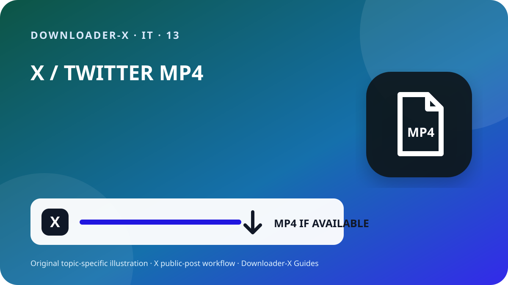

Risposta rapida
convertire link twitter in video — Apri il singolo post X che contiene il video, verifica che sia pubblico e usa Condividi per copiarne il link. Incolla l’URL in Downloader-X, seleziona una variante MP4 realmente mostrata e riproduci inizio, parte centrale e fine dopo il salvataggio. Usa il procedimento solo per video tuoi, media con licenza compatibile o contenuti per cui hai un’autorizzazione chiara. Un flusso basato su link pubblico non deve chiedere password X, codici di verifica, cookie del browser o accesso remoto.

Tre passaggi con Downloader-X
- Il collegamento deve identificare un solo post con il video. In X apri Condividi e copia il link del post, poi provalo una volta in una nuova scheda. Gli URL di profilo o timeline contengono più post e non indicano il media desiderato. Questo controllo distingue un indirizzo errato da un problema del servizio e limita i clic ripetuti che possono produrre file incompleti o duplicati.
- Incolla l’URL verificato nel downloader X e avvia l’elaborazione una sola volta. Attendi le opzioni effettive e confronta titolo o anteprima con il post originale. Seleziona soltanto formati e risoluzioni realmente elencati. Non considerare vere promesse di 4K, 1080p o assenza di watermark se la fonte non fornisce quella variante. In caso di errore deve comparire un messaggio chiaro; una pagina HTML, un installer o un file sbagliato non vanno presentati come video riuscito.
- Il lavoro è finito quando il file si apre come un vero video, non quando scompare la barra di avanzamento. Prima di archiviare o condividere controlla:
Cosa significa questa ricerca
convertire link twitter in video. Solo post pubblici. Formato e qualità dipendono dalle opzioni realmente fornite dalla fonte.
2. Copiare l’URL esatto del post
Il collegamento deve identificare un solo post con il video. In X apri Condividi e copia il link del post, poi provalo una volta in una nuova scheda. Gli URL di profilo o timeline contengono più post e non indicano il media desiderato. Questo controllo distingue un indirizzo errato da un problema del servizio e limita i clic ripetuti che possono produrre file incompleti o duplicati.
Apri il post video originale nella sua pagina individuale.
Usa Condividi per copiare il link senza digitare l’URL a mano.
Verifica il dominio x.com o twitter.com e l’indirizzo del post.
Apri una nuova scheda e confronta account, testo, miniatura e video.
Conserva URL fonte e prova di autorizzazione insieme al file.
3. Incollare il link e scegliere solo risultati reali
Incolla l’URL verificato nel downloader X e avvia l’elaborazione una sola volta. Attendi le opzioni effettive e confronta titolo o anteprima con il post originale. Seleziona soltanto formati e risoluzioni realmente elencati. Non considerare vere promesse di 4K, 1080p o assenza di watermark se la fonte non fornisce quella variante. In caso di errore deve comparire un messaggio chiaro; una pagina HTML, un installer o un file sbagliato non vanno presentati come video riuscito.
4. Scegliere HD in base a fonte e utilizzo
L’etichetta HD è affidabile solo se corrisponde a una variante realmente disponibile nel post pubblico. Su telefono e portatile 720p offre spesso un buon equilibrio tra nitidezza, dati e spazio; 1080p è utile su schermi grandi quando la fonte lo offre davvero. Due file con la stessa risoluzione possono differire per bitrate, codec e compressione, quindi riproducili e non giudicare dal nome. Se serve l’audio, scegli un’opzione combinata video e audio e controlla subito la traccia dopo il salvataggio.
6. Verificare il file salvato
Il lavoro è finito quando il file si apre come un vero video, non quando scompare la barra di avanzamento. Prima di archiviare o condividere controlla:
Il tipo corrisponde alla scelta, per esempio MP4, e non è HTML o un installer.
La dimensione non è zero ed è plausibile per durata e qualità.
Inizio, metà e fine riproducono correttamente immagine, durata e audio.
Nome, cartella, URL fonte e autorizzazione sono documentati.
5. Salvare su iPhone, Android, Windows o Mac
Su iPhone e iPad i download Safari si trovano di solito nell’app File, nella cartella Download o nella posizione impostata. Su Android controlla l’elenco del browser o l’app Files. Su Windows, macOS, Linux e ChromeOS verifica la cartella Download e la cronologia prima di premere ancora. Se manca spazio, elimina copie inutili o scegli una risoluzione inferiore. Non installare un gestore sconosciuto solo perché una pagina afferma che è obbligatorio.
Risolvere i problemi dalla fonte al file
Torna al post video e copia tramite Condividi; il profilo non identifica un singolo media.
Può essere protetto o limitato. Non fornire credenziali o cookie; chiedi una copia autorizzata.
Verifica che il post esista, contenga video nativo e si apra con l’URL, poi aggiorna una volta.
Elimina il file, non modificarne l’estensione e ricontrolla URL e opzione video reale.
Controlla fonte, volume e un altro lettore affidabile; scegli una variante combinata se necessario.
Sicurezza e privacy
Un flusso per link pubblici non richiede password X, codice a due fattori, cookie esportati, controllo remoto, file eseguibili o disattivazione della protezione. Interrompi se una pagina offre .exe, .dmg o estensioni non correlate. Controlla dominio, tipo e origine prima di aprire. Su dispositivi condivisi sposta i file autorizzati dalle cartelle pubbliche ed elimina copie temporanee inutili.
1. Controllare accesso pubblico e diritti
Parti dal post originale, non da profilo, ricerca, screenshot o anteprima inoltrata. Apri l’URL in una nuova scheda e confronta account, testo, miniatura e durata. La visibilità pubblica indica l’accesso attuale, non un permesso automatico per ripubblicare, modificare, vendere o usare in pubblicità. Se l’account è protetto, il post eliminato, l’accesso speciale o una limitazione necessaria, fermati e chiedi una copia autorizzata al proprietario invece di aggirare il controllo.
La visibilità pubblica è un’impostazione di accesso, non una licenza. Salva video tuoi, media con licenza compatibile o contenuti chiaramente autorizzati. Per ripubblicare, modificare o usare commercialmente, verifica che il permesso copra lo scopo e conserva una prova scritta. Rispetta persone, informazioni private, luoghi sensibili e minori presenti nel video e non presentare il lavoro altrui come tuo.
Documentare la fonte prima di conservarla
Per un progetto con più clip registra account, data, URL permanente, descrizione breve, variante scelta, dimensione e base dell’autorizzazione. Eviti file senza provenienza e puoi verificare in seguito attribuzione e licenza. In un quote post, una risposta o un thread, copia l’URL del post che contiene davvero il video, non di quello che lo cita soltanto.
Organizzare i file ed evitare duplicati
Usa un nome con argomento breve, account, data e qualità, per esempio topic_creator_2026-08-30_720p.mp4. Separa cartelle temporanee e verificate e conserva solo le varianti necessarie. Fare più clic non migliora la qualità e spesso crea duplicati o file parziali. Tieni URL, credito e condizioni d’uso in una nota o foglio del progetto.
Checklist finale di 60 secondi
Il post è pubblico senza aggirare controlli.
Sei proprietario o hai il permesso di salvare.
Il servizio non chiede credenziali o cookie.
La qualità scelta appare nel risultato reale.
Tipo e dimensione del file sono plausibili.
Controlli per evitare risultati errati
Guida pratica per X · 1
Di solito nell’app File, in Download o nella posizione scelta in Safari.
Usa un nome con argomento breve, account, data e qualità, per esempio topic_creator_2026-08-30_720p.mp4. Separa cartelle temporanee e verificate e conserva solo le varianti necessarie. Fare più clic non migliora la qualità e spesso crea duplicati o file parziali. Tieni URL, credito e condizioni d’uso in una nota o foglio del progetto.
Il collegamento deve identificare un solo post con il video. In X apri Condividi e copia il link del post, poi provalo una volta in una nuova scheda. Gli URL di profilo o timeline contengono più post e non indicano il media desiderato. Questo controllo distingue un indirizzo errato da un problema del servizio e limita i clic ripetuti che possono produrre file incompleti o duplicati.
Guida pratica per X · 2
Tipo e dimensione del file sono plausibili.
Sì, se aprono lo stesso post pubblico e la destinazione è stata verificata.
Apri una nuova scheda e confronta account, testo, miniatura e video.
Guida pratica per X · 3
Incolla l’URL verificato nel downloader X e avvia l’elaborazione una sola volta. Attendi le opzioni effettive e confronta titolo o anteprima con il post originale. Seleziona soltanto formati e risoluzioni realmente elencati. Non considerare vere promesse di 4K, 1080p o assenza di watermark se la fonte non fornisce quella variante. In caso di errore deve comparire un messaggio chiaro; una pagina HTML, un installer o un file sbagliato non vanno presentati come video riuscito.
Il tipo corrisponde alla scelta, per esempio MP4, e non è HTML o un installer.
Domande frequenti
convertire link twitter in video?
Solo post pubblici. Formato e qualità dipendono dalle opzioni realmente fornite dalla fonte.
Perché 1080p non è sempre disponibile?
La risoluzione dipende dal file fonte e dalle varianti realmente disponibili.
Cosa fare se ricevo HTML?
Eliminalo, non rinominarlo e ricontrolla URL e opzione video.
Dove si trova il file su iPhone?
Di solito nell’app File, in Download o nella posizione scelta in Safari.
Si può scaricare da un account protetto?
No. La guida riguarda post pubblici e non aggira limitazioni.
Guide X correlate
Usa il link esatto del post pubblico
Solo post pubblici. Formato e qualità dipendono dalle opzioni realmente fornite dalla fonte.
Apri Downloader-X